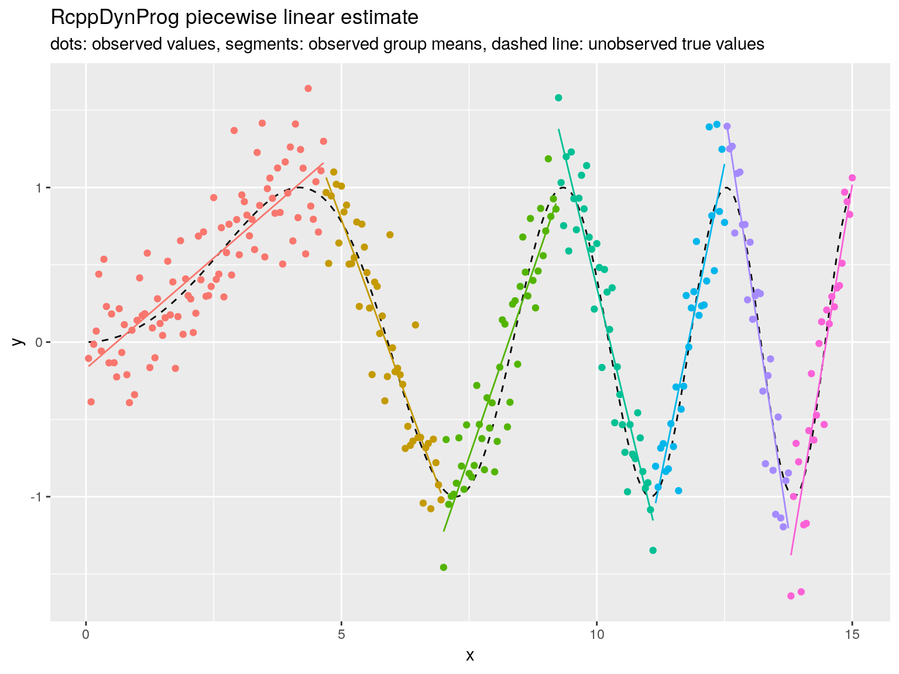

In this example we fit a piecewise linear function to example data.
Please see here for an discussion of the methodology.
library("RcppDynProg")
plot <- requireNamespace("ggplot2", quietly = TRUE)
if(plot) {
library("ggplot2")
}
set.seed(2018)
g <- 100
d <- data.frame(
x = 0.05*(1:(3*g))) # ordered in x
d$y_ideal <- sin((0.3*d$x)^2)
d$y_observed <- d$y_ideal + 0.25*rnorm(length(d$y_ideal))
if(plot) {
plt1 <- ggplot(data= d, aes(x = x)) +
geom_line(aes(y = y_ideal), linetype=2) +
geom_point(aes(y = y_observed)) +
ylab("y") +
ggtitle("raw data",
subtitle = "dots: observed values, dashed line: unobserved true values")
print(plt1)
}x_cuts <- solve_for_partition(d$x, d$y_observed, penalty = 1)
print(x_cuts)## x pred group what
## 1 0.05 -0.1570880 1 left
## 2 4.65 1.1593754 1 right
## 3 4.70 1.0653666 2 left
## 4 6.95 -0.9770792 2 right
## 5 7.00 -1.2254925 3 left
## 6 9.20 0.8971391 3 right
## 7 9.25 1.3792437 4 left
## 8 11.10 -1.1542021 4 right
## 9 11.15 -1.0418353 5 left
## 10 12.50 1.1519490 5 right
## 11 12.55 1.3964906 6 left
## 12 13.75 -1.2045219 6 right
## 13 13.80 -1.3791405 7 left
## 14 15.00 1.0195679 7 rightd$estimate <- approx(x_cuts$x, x_cuts$pred, xout = d$x, method = "linear", rule = 2)$y
d$group <- as.character(findInterval(d$x, x_cuts[x_cuts$what=="left", "x"]))print(sum((d$y_observed - d$y_ideal)^2))## [1] 20.42462print(sum((d$estimate - d$y_ideal)^2))## [1] 3.536541print(sum((d$estimate - d$y_observed)^2))## [1] 20.53796if(plot) {
plt2 <- ggplot(data= d, aes(x = x)) +
geom_line(aes(y = y_ideal), linetype=2) +
geom_point(aes(y = y_observed, color = group)) +
geom_line(aes(y = estimate, color = group)) +
ylab("y") +
ggtitle("RcppDynProg piecewise linear estimate",
subtitle = "dots: observed values, segments: observed group means, dashed line: unobserved true values") +
theme(legend.position = "none")
print(plt2)
}